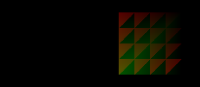
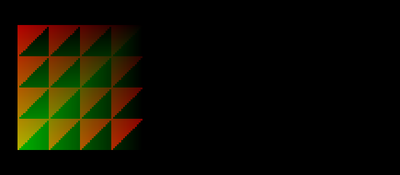
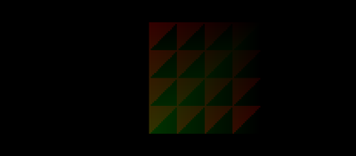
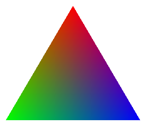
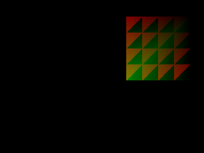

第 04 回
頂点シェーダーで板を動かす
この回の目標
- 頂点シェーダーが「頂点 1 個ずつ、画面のどこに描くかを決める関数」だと分かる。
- 3D の座標を、ビュー行列・射影行列で画面の座標にする流れが分かる。
開くサンプル

samples/C1_VertexShaderTest
テンプレート: templates/04_vertex_shader.dxtemplate
動かすと、画像を貼った板が左右に動きながら、明るくなったり暗くなったりします。動きは頂点シェーダー、明るさはピクセルシェーダーで付けています。

20 フレーム目50 フレーム目
80 フレーム目
110 フレーム目しくみ
- 頂点シェーダーは頂点の数だけ呼ばれます(このサンプルは 6 回)。ピクセルシェーダーは画素の数だけ呼ばれます。
- 頂点シェーダーが出した値(色・テクスチャ座標)は、三角形の中でなめらかに混ぜられてからピクセルシェーダーに届きます。

上の頂点 は赤、左下 は緑、右下 は青を出したとき。
頂点シェーダーは頂点の色を 3 つ決めただけですが、間の画素には、近い頂点の色ほど強く混ざった色が届きます。
読むところ
shaders/VertexShaderTestVS.hlsl
HLSL(シェーダー)#include "DxLibVS.hlsli" // DxLib が渡すカメラの行列などの宣言
HLSL(シェーダー)struct VS_INPUT
{
float3 Position : POSITION0 ; // pos
float4 SubPosition: POSITION1 ; // spos
float3 Normal : NORMAL0 ; // norm
…(全部で 9 個)
} ;
DrawPolygon3DToShaderの頂点(VERTEX3DSHADER)の全 9 要素を、この順番で書きます。使わない要素も消しません。- 1 つでも消したり順番を変えたりすると、エラーも出ずに何も描かれません(仕様書 5 章)。何も出ないときは、まずここを疑います。
HLSL(シェーダー)lWorldPosition = float4( VSInput.Position, 1.0f ) + cfAddPosition ; // C++ から渡した量だけ動かす
lViewPosition.x = dot( lWorldPosition, g_Base.ViewMatrix[ 0 ] ) ; // カメラから見た座標に
…
VSOutput.ProjectionPosition.x = dot( lViewPosition, g_Base.ProjectionMatrix[ 0 ] ) ; // 画面の座標に
g_Base.ViewMatrixとg_Base.ProjectionMatrixは、DxLib のカメラの設定(SetCameraPositionAndTarget_UpVecYなど)から DxLib が入れてくれる値です。- 行列は「行と内積(
dot)を取る」形で掛けます。ビュー行列は 3 行だけなので、w は自分で 1 にします(仕様書 7 章)。
HLSL(シェーダー)struct VS_OUTPUT
{
float4 ProjectionPosition : SV_POSITION ; // 画面の座標(必ず先頭に)
float4 DiffuseColor : COLOR0 ;
float2 TextureCoord0 : TEXCOORD0 ;
} ;
- ピクセルシェーダーの入力(
PS_INPUT)は、この出力と同じ順番で書きます。
src/main.cpp
- 動かす量は、02 と同じ定数バッファで、頂点シェーダーのスロット 4 に置きます(
DX_SHADERTYPE_VERTEX)。 - 3D の描画なので、C++ の座標は 3D の座標です(DxLib の最初のカメラは、z = 0 の平面がほぼ画面の画素の大きさで見えるように置かれています。ただし 3D なので y は上向きです)。
課題
- ★4-1左右だけでなく上下にも動かす(C++ で渡す y も変える)。3D の座標なので、y が大きいほど上です。
- ★★4-2頂点シェーダーで頂点の色も時間で変える(
VSOutput.DiffuseColorを書き換える)。ピクセルシェーダーでなく頂点シェーダーで変えると、どう見えるか。 - ★★★4-3わざと
VS_INPUTの要素を 1 つ消して、何も描かれないこと(エラーが出ないこと)を確かめる。確かめたら元に戻す。
解答例: 4-1 → answers/04_move_xy(【課題 4-1】 の所)
解答例を動かした画面

answers/04_move_xy(ななめに動く)